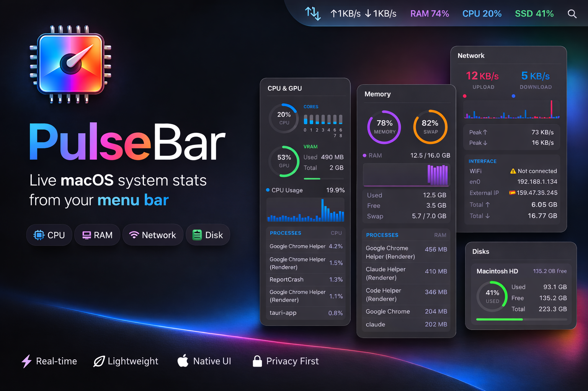
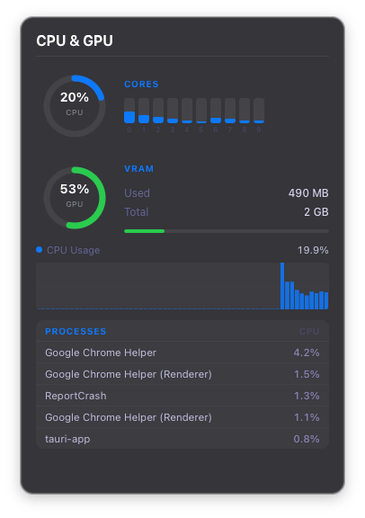
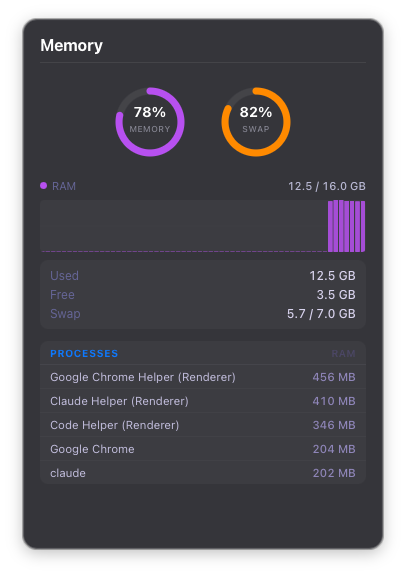
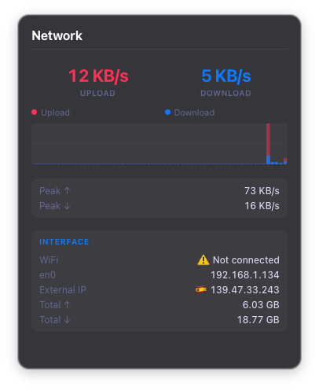
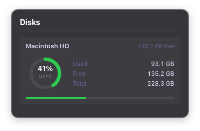

Lightweight. Native. Always there.
Gatekeeper blocks unsigned apps. PulseBar is safe — it just lacks a paid Apple notarization certificate. Fix it in one command:
xattr -cr /Applications/PulseBar.app
Or right-click the app → Open → click Open in the dialog.

Panels
Click any tray icon to open a detailed stats panel

Usage, temperature, per-core bars and top processes at a glance.

RAM and swap usage with 60-sample scrolling history and top memory hogs.

Real-time upload/download speeds, session peaks and interface information.

Storage usage per disk with ring charts and used/free/total breakdowns.
Setup
No configuration. No background services. Just open it.
Download and drop PulseBar into your Applications folder like any Mac app.
Four live indicators appear in your menu bar instantly — CPU, Memory, Network, Disk.
Tap any icon to open a beautiful panel with detailed stats and history charts.
Free, open source, and tiny. No subscription required.
Download for Mac — FreeNo telemetry. One external call: your public IP via ipwho.is for the Network panel's location info.